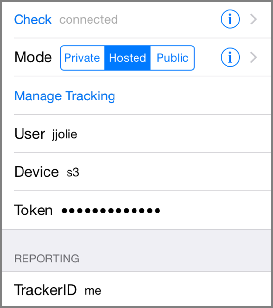

Settings
Location tracking isn't easy, and people's requirements differ. You may be happy with one location report when your device moves a few kilometers, whereas the next person prefers seeing a minute-by-minute report. As described in the introduction??? OwnTracks relies on the device's operating system APIs for this information. What our apps do is to tell the operating system that they're willing to get more or fewer updates if possible. For configuring this, as well as the connection parameters to your [MQTT broker] and sundry options, we have quite a large number of settings.
iOS & Android
User
Device
Subscribe topic
Publish topic
TID
iOS only

Depending on the mode you're configuring, iOS will show you all or fewer possible settings:
- In Public mode you can configure the TrackerID only.
- In Hosted mode you configure the username, device, and token you set up on the OwnTracks Hosted Web site, and you may specify a TrackerID.